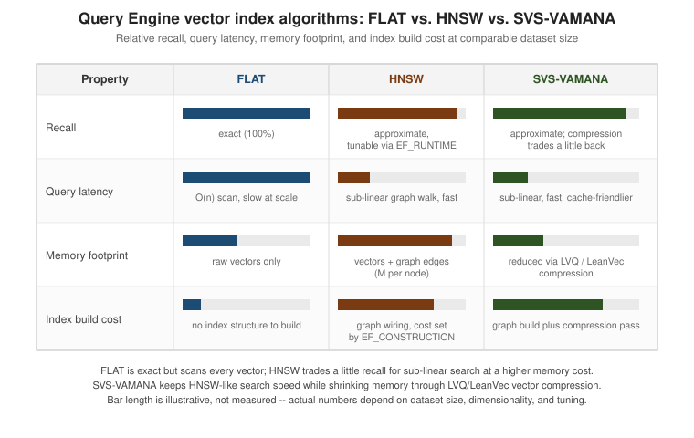

Vector Search: Query Engine & Vector Sets
|
This content was generated with the assistance of AI and should be verified against the official documentation before being relied on in production. |
Examples on this page target Redis Open Source 8.10 (8.10.2) with the Jedis 8 and Lettuce 7.7 client
libraries. Redis has two independent ways to store and search vector embeddings: a VECTOR field on a Query
Engine index, which sits alongside ordinary text/tag/numeric fields on a hash or JSON document, and a
dedicated vector set data type, which stores nothing but vectors under one key and is purpose-built for
similarity search on its own. This page covers the field type, the query syntax built on top of it,
FT.HYBRID, vector sets, and the RAG/semantic-cache/agent-memory patterns both feed into.
Query Engine VECTOR fields
A VECTOR field is declared like any other field on an FT.CREATE schema, alongside the TAG/NUMERIC/
TEXT fields used to filter and rank the rest of a document. The Bookshop idx:books index and its
$.embedding AS embedding field are defined in
Query Engine: Indexing & Data Modeling; this page assumes that schema and only
covers the vector-specific algorithm, type, and metric choices.
Index algorithms
Three algorithms back a VECTOR field, chosen with VECTOR <algorithm> attribute-count attribute value
…:
-
FLAT— brute-force, exact search: every query scans every vector, so recall is always 100%, at the cost of query time growing linearly with the number of vectors. Reasonable for small collections or as a correctness baseline to compare an approximate algorithm against. -
HNSW— an approximate, graph-based index; Vector Indexing & HNSW and kNN / HNSW vector search already cover the graph-walk algorithm itself in depth, so it isn’t repeated here. Redis’sHNSWaccepts the same tuning knobs those pages describe under other names:M(max edges kept per node),EF_CONSTRUCTION(candidate-list size while building the graph), andEF_RUNTIME(candidate-list size at query time, the recall/latency knob per search).EPSILONadditionally bounds a range query’s (see below) search radius as a relative factor around the requested distance. -
SVS-VAMANA— Intel’s Scalable Vector Search index, added to Redis 8.2. It keeps HNSW-style sub-linear search but shrinks memory with vector compression:LVQ(Locally-adaptive Vector Quantization) compresses each vector’s components based on its own local neighbourhood rather than a single global scale, andLeanVecadditionally reduces dimensionality for very high-dimensional embeddings. Both trade a small, usually negligible amount of recall for a meaningfully smaller memory footprint thanHNSWat the same dataset size.
redis-vector-index-tradeoffs.svg (below) compares the three across recall, query latency, memory, and build
cost.
Vector types and distance metrics
Each field also declares a TYPE and a DISTANCE_METRIC:
-
TYPE—FLOAT32(4 bytes/component, the default choice and what the Bookshop schema uses),FLOAT16(2 bytes/component, halves storage for embeddings that tolerate the precision loss), orBFLOAT16(also 2 bytes/component, trading mantissa precision for the wider exponent range of afloat32-compatible layout — useful when an embedding model’s own weights are alreadybfloat16). -
DISTANCE_METRIC—COSINE(angular distance, the usual choice for embeddings that are normalized or whose magnitude carries no meaning — the Bookshop schema uses this),L2(Euclidean distance), orIP(inner product, cheapest to compute and equivalent toCOSINEwhen every vector is pre-normalized to unit length).
KNN queries
A KNN query is expressed inside the query string itself, combined with the ordinary FT.SEARCH filter
syntax:
-
FT.SEARCH index "(filter)⇒[KNN k @field $vec [AS score_field]]" PARAMS 2 vec <blob> DIALECT 2—knearest neighbours to the vector bound to$vec, restricted first to documents matchingfilter(*for no filter).KNNalways needsDIALECT 2or higher and the query vector passed as a binary blob throughPARAMS, never inlined as literal text. See Redis vector search.
A real embedding is produced by an embedding model against the book’s title/description text — out of scope
here — and passed as a packed float32 array; the example below abbreviates it as a short, elided literal
purely to show the call shape:
127.0.0.1:6379> FT.SEARCH idx:books "*=>[KNN 10 @embedding $q AS score]" PARAMS 2 q "\x3f\x8a\x3d\x71...(384 float32 values, 1536 bytes)..." SORTBY score DIALECT 2The same search from Jedis, building the parameter map with the query vector produced elsewhere:
package com.example.bookshop.search;
import redis.clients.jedis.RedisClient;
import redis.clients.jedis.search.FTSearchParams;
import redis.clients.jedis.search.Query;
import redis.clients.jedis.search.SearchResult;
public class SimilarBooksService {
private final RedisClient jedis;
public SimilarBooksService(RedisClient jedis) {
this.jedis = jedis;
}
public SearchResult findSimilar(byte[] queryEmbedding, int k) {
Query query = new Query("*=>[KNN " + k + " @embedding $q AS score]")
.addParam("q", queryEmbedding)
.setSortBy("score", true)
.dialect(2);
return jedis.ftSearch("idx:books", query);
}
}queryEmbedding is the 384-dimension FLOAT32 array an embedding model returns for the search text; turning
text into that array is outside what this page covers. This derives from
Redis vector search.
Range queries and hybrid filtering
VECTOR_RANGE finds every vector within a given distance of the query vector, rather than a fixed count of
nearest neighbours:
-
@field:[VECTOR_RANGE radius $vec]⇒{$YIELD_DISTANCE_AS: score_field}— matches documents whose distance to$vecis at mostradius. On anHNSWfield,EPSILONbounds how far outsideradiusthe graph walk is willing to look for extra candidates before giving up, trading a little more work for better recall near the boundary. See Redis vector search.
127.0.0.1:6379> FT.SEARCH idx:books "@embedding:[VECTOR_RANGE 0.35 $q]=>{$YIELD_DISTANCE_AS: score}" PARAMS 2 q "\x3f\x8a\x3d\x71...(elided)..." SORTBY score DIALECT 2Both KNN and VECTOR_RANGE compose with ordinary filters ahead of the ⇒, so a vector search can be
pre-filtered by any other field on the schema — restricting a similarity search to, say, a genre tag or a
price range before the vector comparison runs, rather than filtering the result set afterwards:
127.0.0.1:6379> FT.SEARCH idx:books "(@genres:{fiction})=>[KNN 10 @embedding $q AS score]" PARAMS 2 q "\x3f\x8a\x3d\x71...(elided)..." SORTBY score DIALECT 2FT.HYBRID: combining vector and text relevance
Since Redis 8.4, FT.HYBRID runs a full-text search and a vector KNN search in the same call and fuses
their two rankings into one result list, instead of an application running two separate queries and merging
scores itself:
-
FT.HYBRID index SEARCH query VSIM @field $vec [KNN count K k] [COMBINE RRF count [CONSTANT c] [WINDOW w] | COMBINE LINEAR count [ALPHA a BETA b]] [LOAD count field …] PARAMS nargs vec blob—SEARCHsupplies the text side,VSIMthe vector side againstfield.COMBINE RRF(Reciprocal Rank Fusion, the default whenCOMBINEis omitted) merges the two rank orders without needing comparable score scales.COMBINE LINEARblends the two scores directly with explicitALPHA/BETAweights, which is useful when one signal should dominate. Every multi-argument option is count-prefixed (the count covers all the tokens that follow it, e.g.KNN 2 K 10,COMBINE RRF 4 WINDOW 40 CONSTANT 60), and unlikeFT.SEARCHthe command takes noDIALECTargument. See FT.HYBRID.
127.0.0.1:6379> FT.HYBRID idx:books SEARCH "@title:redis" VSIM @embedding $q KNN 2 K 10 COMBINE RRF 4 WINDOW 20 CONSTANT 60 LOAD 2 @title @author PARAMS 2 q "\x3f\x8a\x3d\x71...(elided)..."Hash vs. JSON storage
A VECTOR field works on either storage type, the same choice covered for the rest of the schema in
Query Engine: Indexing & Data Modeling: on a hash, the embedding is stored as a
raw binary string field; on JSON, it’s a $.embedding array path, as the Bookshop bookshop:book:<isbn>
documents use. JSON’s advantage is storing the embedding alongside naturally nested book metadata in one
document; a hash is the leaner choice when the record is otherwise flat.
Vector sets
A vector set is a dedicated Redis data type — not a Query Engine field — introduced for similarity search
that doesn’t need the rest of a search index around it: one key holds nothing but a set of vectors, each
identified by a member name, searchable by VSIM without an FT.CREATE schema at all. The Bookshop scenario
mirrors the same three books in a vector set bookshop:vset:books, keyed by ISBN.
Adding and inspecting vectors
-
VADD key [REDUCE dim] <FP32 blob \| VALUES num element [element …]> member [CAS] [NOQUANT \| Q8 \| BIN] [EF build-ef] [SETATTR json] [M numlinks]— adds or replacesmember’s vector. `REDUCE dimapplies random projection to shrink the vector todimdimensions on ingestion, trading a little accuracy for less memory and faster search.Q8(8-bit quantization, the default) andBIN(1-bit binary quantization) trade precision for memory relative toNOQUANT(full-precisionfloat32), discussed further below.SETATTRattaches an arbitrary JSON blob of metadata to the member in the same call. See VADD.
127.0.0.1:6379> VADD bookshop:vset:books VALUES 384 0.0123 -0.0871 0.0456 ... 9780000000001 SETATTR '{"genres":"fiction"}'
(integer) 1-
VSIM key <ELE member \| FP32 blob \| VALUES num element [element …]> [COUNT count] [EF search-ef] [FILTER expression] [FILTER-EF max-filtering-effort] [WITHSCORES] [WITHATTRIBS]— finds thecountmembers most similar to a given member (ELE) or an ad hoc vector.EFis the same recall/latency candidate-list knobHNSWuses on the Query Engine.FILTER expressionrestricts candidates using a small expression language over attributes set withSETATTR(for example.genres == "fiction"), evaluated during the graph walk itself rather than after it —FILTER-EFbounds how much extra search effort that filter is allowed to cost before giving up on fillingcountresults.WITHSCORESreturns each match’s similarity alongside its member name. See VSIM.
127.0.0.1:6379> VSIM bookshop:vset:books ELE 9780000000001 COUNT 5 WITHSCORES FILTER '.genres == "fiction"'
1) "9780000000001"
2) "1"
3) "9780000000003"
4) "0.912"The rest of the vector set surface reads and inspects members rather than searching:
-
VEMB key member— returns the raw (or, for a quantized set, dequantized-approximate) vector for a member. See VEMB. -
VGETATTR key member— returns the JSON attribute blob attached viaSETATTR. See VGETATTR. -
VCARD key— the number of members in the set. See VCARD. -
VDIM key— the vector dimensionality the set was created with (post-REDUCE, if used). See VDIM. -
VINFO key— a summary of the set’s configuration: dimensionality, quantization type, member count, and graph parameters. See VINFO.
The same similarity search expressed with Lettuce, against the sync command API:
package com.example.bookshop.search;
RedisCommands<String, String> commands = connection.sync();
List<Object> results = commands.dispatch(
CommandType.VSIM,
new CommandArgs<>(StringCodec.UTF8)
.add("bookshop:vset:books")
.add("ELE").add("9780000000001")
.add("COUNT").add(5)
.add("WITHSCORES")
.add("FILTER").add(".genres == \"fiction\""));Lettuce has no typed command wrapper for vector sets yet, so the call above goes through the generic
dispatch API against VSIM.
Quantization and memory
NOQUANT keeps every vector at full float32 precision — the most memory and the highest recall. Q8
quantizes each component to 8 bits per a learned per-vector scale, cutting memory roughly 4x versus NOQUANT
with a small recall cost, and is the default when no quantization option is given. BIN quantizes to a
single bit per component, cutting memory much further still at a larger recall cost — appropriate when the
embedding model’s vectors remain separable even after that much compression, or as a fast first-pass filter
ahead of a more precise re-rank. REDUCE composes with any of the three: it shrinks the dimensionality before
quantization is even applied.
Vector sets vs. Query Engine VECTOR fields
Query Engine VECTOR field |
Vector set | |
|---|---|---|
Storage |
One field on a hash/JSON document already indexed for other fields ( |
A dedicated key holding only vectors and their attribute metadata |
Filtering |
Full |
A smaller expression language over |
Combining with text search |
|
No text search of its own — vector similarity only |
Compression |
|
|
Best fit |
Vector similarity as one signal among several already-indexed fields on a document |
A standalone similarity index (embeddings, agent memory, caches) with no other document fields to search |
RAG, semantic cache, and agent memory patterns
Both storage options above feed three related application patterns:
-
Retrieval-augmented generation (RAG) — an incoming question is embedded, the nearest book (or document) vectors are retrieved from
idx:booksorbookshop:vset:books, and the retrieved text is passed to an LLM as grounding context alongside the question. -
Semantic cache — a previously answered question’s embedding and response are stored; a new question is served the cached response when its embedding falls within a similarity threshold of an existing one, instead of calling the LLM again for a near-duplicate question.
-
Agent memory — a conversational agent’s past turns or facts are embedded and stored so a later turn can retrieve relevant history by similarity rather than replaying the entire conversation.
RedisVL (a Python library) and the LangChain Redis integration both build on these same primitives — FT.CREATE/FT.SEARCH/FT.HYBRID and vector-set commands — to provide ready-made RAG, semantic-cache, and
memory building blocks, rather than an application wiring the raw commands above by hand each time; their own
APIs are out of scope here. See RedisVL
for details. Spring Boot: Redis as a Vector Database covers wiring a Query Engine
vector index into a Spring Boot application with Spring AI.

Related pages
-
Query Engine: Indexing & Data Modeling — the base
idx:booksschema and theVECTORfield’s place alongsideTAG/TEXT/NUMERICfields. -
Vector Indexing & HNSW and kNN / HNSW vector search — HNSW graph theory, not repeated on this page.
-
Spring Boot: Redis as a Vector Database — wiring a Redis vector index into a Spring Boot application with Spring AI.
-
Integrating with Spring AI — Spring AI’s vendor-neutral
VectorStoreAPI, advisors and filter expressions, of which the Redis vector store is one implementation. -
Vector Databases & RAG — the vendor-neutral vector database and RAG catalog this page’s Redis-specific vector search fits into.
-
ANN Indexes: Flat, IVF, HNSW and Beyond — the HNSW/flat index theory behind this page’s algorithm choice.
-
Similarity Metrics & Semantic Search — cosine, L2 and inner-product distance metrics referenced above.
References
-
Redis vectors —
VECTORfield types, algorithms, and quantization overview. -
Redis vector search —
KNNandVECTOR_RANGEquery syntax.